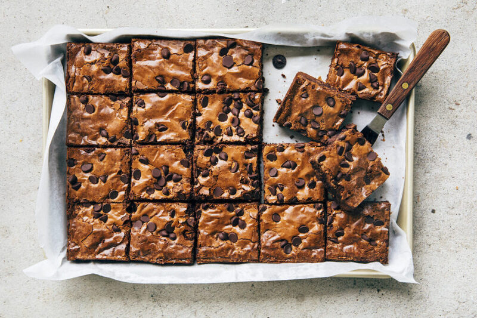

The Best Brownies Ever!

Chocolate Fudge Brownies
What is the best kind of brownies, fudge brownies vs chewy brownies? Well,
it’s a matter of taste, some people will lean toward chewy brownies
while others, fudge brownies. Some chewy brownies are like eating cake and
i would rather have a chocolate cake than a “cake brownie”. I fall
into the fudge brownie territory but not too fudgy; i like my brownies to
have more texture and a little bit of chew. The trick to making a well balanced
fudge brownie that’s fudgy while also having texture and a subtle chew is
to use both cocoa powder and melted chocolate. This is an easy recipe that will
give you some of the best brownies you will ever eat.
Ingredients
- 1 ¼ cups (227 grams) dark chocolate(60% to 70% cacao)
- 1 cup (228 grams) unsalted butter, chopped
- 2 tablespoons cocoa powder
- 1 cup (128 grams) all-purpose flour
- ½ teaspoon kosher salt
- 4 large eggs
- 1 cup (213 grams) tightly packed dark brown sugar
- 1 cup(198 grams) granulated sugar
- 2 teaspoons vanilla extract
- Dark chocolate chips (optional)
Instructions
- Position a rack in the center of the oven and preheat the oven to 350°F/177°C.
Grease a 9 x 13-inch cake pan with cooking spray or butter and line with parchment
paper and grease the parchment paper too.
- Place the dark chocolate, butter, and cocoa powder in a heatproof bowl set over a
saucepan filled with a few inches of simmering water. Cook over medium heat to melt
the butter, using a spatula to stir the mixture until the butter and chocolate have
melted and combined. Set the bowl aside and let the mixture cool while preparing the
other ingredients.
- Whisk together the floor and salt in a small bowl.
- Combine the eggs, sugars and vanilla in a large bowl. Using a hand mixer or a stand mixer,
whisk on low until combined, about 1 to 2 minutes. Increase the mixer speed to medium
and slowly pour in the chocolate mixture. continue whisking on medium until the batter is
smooth, about 1 minute.
- Sprinkle the dry ingredients over the batter and use a spatula to mix until just combined.
Add about ¾ of the chocolate Chips and mix to combine.
- Pour the batter into the prepared pan and use a spatula to smooth the top. Sprinkle the
remaining chocolate Chips over the batter. Bake for 35 to 40 minutes, or until a skewer
inserted into the center of the brownies comes out with a few crumbs attached, be careful
not to overbake. Cool completely before slicing.
- Run a butter knife along the edges of the pan and lift the brownies out of the pan and onto
a cutting board. Slice into rectangles, according to your preferred size, and serve. The brownies
can be stored in an airtight container and refrigerated upto 1 week.